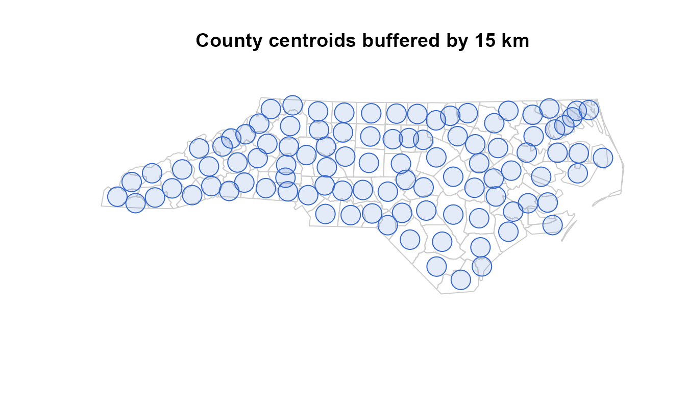
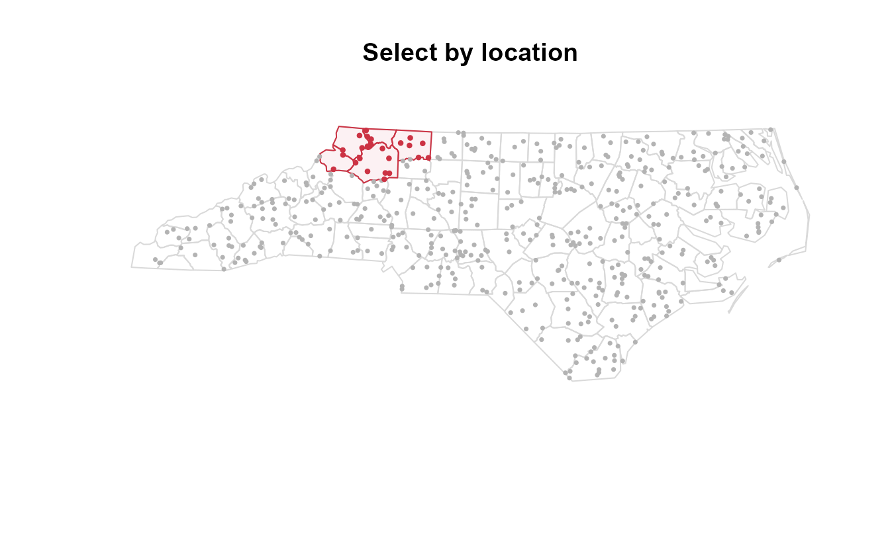
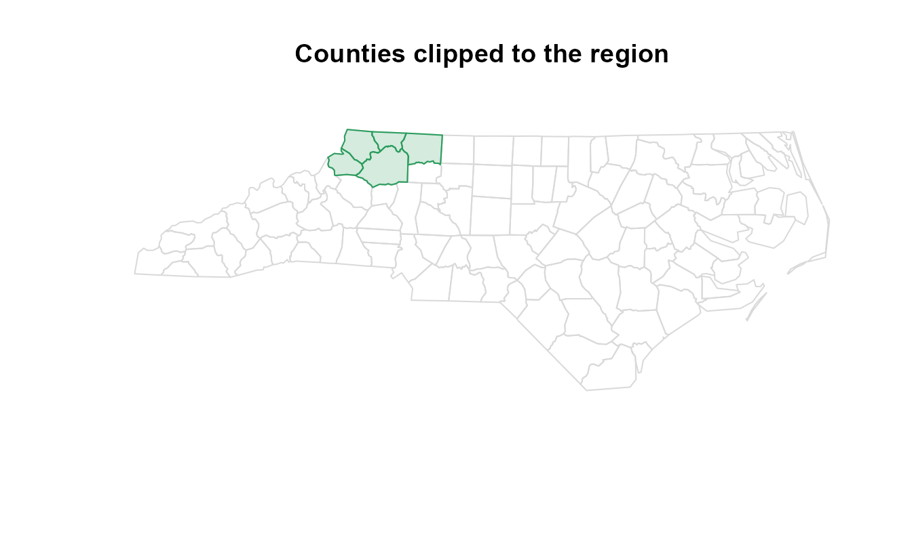
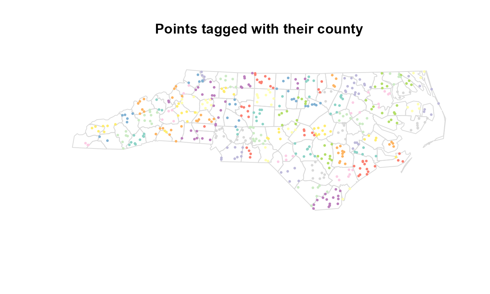
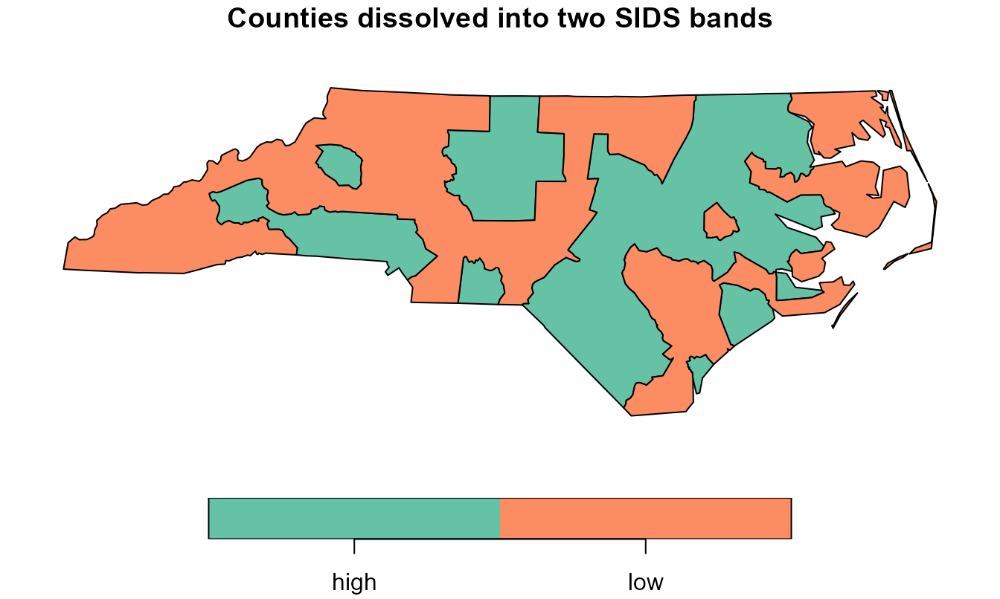
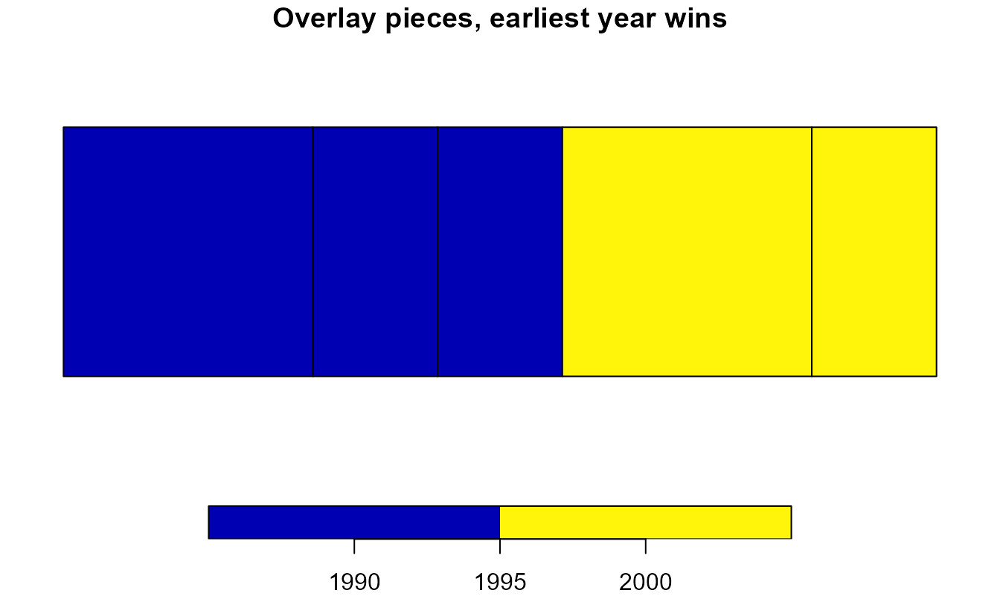

Streaming spatial operations
Gilles Colling
2026-06-29
Source:vignettes/streaming-spatial.Rmd
streaming-spatial.RmdThis vignette is the hands-on companion to Out-of-core GIS with vectra. That article lays out the cost model; this one runs the streaming vector verbs end to end on a real layer, so every block below is code you can execute and check. It needs the optional sf package, which supplies the geometry engine vectra streams around.
The problem
A desktop GIS holds one layer in memory, runs a tool, and writes the result. That model breaks the moment the working layer is bigger than RAM: a national occurrence set, a continental road network, every parcel in a country. The geometry alone runs to tens of gigabytes before any operation touches it.
vectra keeps the same toolbox but changes what stays resident. A
query is pulled through the C engine in fixed-size batches; each spatial
step works on the batch in front of it and spills the transformed batch
back to disk as a fresh lazy node. Peak memory is one batch plus
whatever small layer the step compares against, so a billion-row layer
flows past a fixed budget. The verbs in this vignette are that streaming
envelope: spatial_map(), spatial_filter(),
spatial_clip(), spatial_join(),
spatial_dissolve(), spatial_overlay(), and
rasterize().
How geometry travels
vectra has no geometry type. A geometry rides through the engine as
hex-encoded WKB in an ordinary string column, and the coordinate
reference system is carried on the returned node rather than written
into the .vtr file. Topology stays with sf and the GEOS
library it links: vectra contributes the streaming, the spill machinery,
and a native fast path, not the geometry algorithms.
One streamed step is a loop. Pull a batch, decode its WKB column into
an sf object, run the operation, encode the result back
into a WKB string column, and append it to a run-file. When the loop
finishes, the run-files become a single lazy node you can carry on
querying. The memory a run holds is
peak = one batch + the resident comparison layerindependent of how many batches stream past. The batch size for the
spill is flush_rows (default 500,000 transformed rows); the
resident layer is the small y a join or filter tests
against.
To make the examples concrete, load the North Carolina counties
shipped with sf and project them to the state plane in metres.
Projecting matters here: in a planar CRS distances, areas, and buffers
are Euclidean, and the recognised operations run natively on the GEOS C
API straight off the WKB column instead of decoding each batch back to
sf.
nc <- st_read(system.file("shape/nc.shp", package = "sf"), quiet = TRUE)
nc <- st_transform(nc, 32119) # NAD83 / North Carolina, metres
crs_nc <- st_crs(nc)
nrow(nc)
#> [1] 100Write the polygons to a .vtr file with their geometry as
a hex-WKB column. This is the shape every streamed layer takes:
attribute columns plus one string column of WKB. In a real out-of-core
workflow this file would be written once from a large source and reused;
here it is 100 counties standing in for the billion-row case.
f_poly <- tempfile(fileext = ".vtr")
write_vtr(data.frame(
NAME = nc$NAME,
BIR74 = nc$BIR74,
SID74 = nc$SID74,
geometry = st_as_binary(st_geometry(nc), hex = TRUE)
), f_poly)tbl(f_poly) now opens a lazy node over that file.
Nothing is read until a verb pulls it. Two functions bring a streamed
result back to R: collect() returns the underlying
data.frame, geometry still a WKB string; collect_sf()
decodes that string and reattaches the node’s CRS, giving an ordinary
sf object ready to plot or hand to any sf function.
Per-feature transforms with spatial_map
The widest door is spatial_map(): apply any per-feature
sf operation to a streamed layer one batch at a time. Buffering,
simplifying, computing centroids, reprojecting, extracting coordinates,
measuring area. The function you pass takes one sf batch
and returns an sf object, an sfc, or a plain
data.frame. The active geometry of the return becomes the streamed
geometry.
Buffer every county centroid by 15 km. The first step builds a centroid layer on disk, the second streams a buffer over it.
cent <- tempfile(fileext = ".vtr")
write_vtr(data.frame(
NAME = nc$NAME,
geometry = st_as_binary(st_centroid(st_geometry(nc)), hex = TRUE)
), cent)
buffered <- tbl(cent) |>
spatial_map(~ st_buffer(.x, 15000), crs = crs_nc)
buffered
#> vectra query node
#> Columns (2):
#> NAME <string>
#> geometry <string>buffered is a lazy node, not a materialized layer: the
buffer has not run yet. collect_sf() pulls it through and
decodes the geometry.
b_sf <- collect_sf(buffered)
plot(st_geometry(nc), border = "grey80", col = NA,
main = "County centroids buffered by 15 km")
plot(st_geometry(b_sf), border = "#3366cc", col = "#3366cc22", add = TRUE)
The formula syntax (~ st_buffer(.x, 15000)) is rlang’s:
.x is the batch. A named function works identically and is
clearer for anything longer than one call. The return can also be a
plain data.frame rather than a geometry, which turns the spatial step
into a streamed feature-summary with the geometry dropped. That is the
way to compute per-feature area over a layer too large to hold
whole.
areas <- tbl(f_poly) |>
spatial_map(~ data.frame(NAME = .x$NAME,
area_km2 = as.numeric(st_area(.x)) / 1e6),
crs = crs_nc)
head(collect(areas))
#> NAME area_km2
#> 1 Ashe 1137.5901
#> 2 Alleghany 611.1970
#> 3 Surry 1423.7288
#> 4 Currituck 694.6611
#> 5 Northampton 1520.9918
#> 6 Hertford 967.8553Because the result is a node, it chains. A buffer feeding a filter
feeding a join is three streamed steps, each spilling to its own
run-files, with the CRS carried forward so you state it once.
flush_rows controls the spill batch: raise it for fewer,
larger temporary files when rows are small, lower it when a single
feature’s geometry is heavy. The default of 500,000 suits point and
small-polygon work.
Smooth geometry with spatial_smooth
spatial_smooth() rounds the corners of every line and
polygon by Chaikin corner-cutting, one batch at a time. Each pass
replaces a vertex with two points along its adjacent edges, so sharp
angles become a smooth curve; more iterations give a
smoother result with more vertices. It is computed directly on the
coordinates with no GEOS call, and open lines keep their endpoints.
zig <- st_linestring(rbind(c(0, 0), c(1, 1), c(2, 0), c(3, 1), c(4, 0)))
f_zig <- tempfile(fileext = ".vtr")
write_vtr(data.frame(
id = 1L, geometry = st_as_binary(st_sfc(zig), hex = TRUE)), f_zig)
tbl(f_zig) |> spatial_smooth(iterations = 3) |> collect_sf()
#> Simple feature collection with 1 feature and 1 field
#> Geometry type: LINESTRING
#> Dimension: XY
#> Bounding box: xmin: 0 ymin: 0 xmax: 4 ymax: 0.75
#> CRS: NA
#> id geometry
#> 1 1 LINESTRING (0 0, 0.015625 0...
unlink(f_zig)Select by location with spatial_filter
The most-used vector tool keeps the features standing in a spatial
relation to another layer: points inside a study region, parcels
touching a road, patches within a buffer of the coast.
spatial_filter() streams the large layer and tests each
batch against a small resident layer with an sf predicate, keeping or
dropping whole features. It is the spatial counterpart to
semi_join(): rows are filtered, never duplicated, and no
columns are added, so the output carries the input schema unchanged.
Sample 500 points across the state and store them as plain x/y columns. Point input as coordinate columns is the headline case and the fully sf-free path: each point is built in C and matched against the resident layer’s spatial index with no per-batch round-trip through sf.
set.seed(1)
pts <- st_coordinates(st_sample(st_union(nc), 500))
fp <- tempfile(fileext = ".vtr")
write_vtr(data.frame(id = seq_len(nrow(pts)), x = pts[, 1], y = pts[, 2]), fp)Keep the points falling inside a five-county region in the northwest.
region <- nc[nc$NAME %in% c("Ashe", "Alleghany", "Surry", "Wilkes", "Watauga"),
"NAME"]
inside <- tbl(fp) |>
spatial_filter(region, coords = c("x", "y"), crs = crs_nc)
nrow(collect(inside))
#> [1] 25Twenty-five of the 500 points land in the region. Plot the kept points against the dropped ones.
keep_xy <- collect(inside)
plot(st_geometry(nc), border = "grey85", col = NA, main = "Select by location")
plot(st_geometry(region), border = "#cc3344", col = "#cc334411", add = TRUE)
points(pts, pch = 16, cex = 0.5, col = "grey70")
points(keep_xy$x, keep_xy$y, pch = 16, cex = 0.6, col = "#cc3344")
negate = TRUE inverts the test, keeping the 475 points
outside the region. A different predicate changes the
relation: st_within, st_covered_by,
st_touches, st_crosses, and the rest of the sf
binary predicates are all accepted. st_is_within_distance
takes its radius through dist, in CRS units, and keeps
every feature within that distance of the layer.
near <- tbl(fp) |>
spatial_filter(region, predicate = st_is_within_distance,
coords = c("x", "y"), crs = crs_nc, dist = 30000)
nrow(collect(near))
#> [1] 60Sixty points sit within 30 km of the region, more than the 25 strictly inside. For the recognised predicates on planar data the test runs in C off the WKB column or the raw coordinates; an unrecognised predicate, geographic data with spherical geometry switched on, or an extra predicate argument falls back to the per-batch sf loop, which preserves sf’s exact semantics at the cost of decoding each batch.
Cut geometry with spatial_clip
spatial_filter() keeps or drops whole features;
spatial_clip() cuts their geometry along a mask. Clipping
intersects each batch with the mask and keeps the part inside it, the
streamed equivalent of st_intersection() against a fixed
boundary. erase = TRUE keeps the part outside instead.
mask_region <- st_union(st_geometry(region))
clipped <- tbl(f_poly) |> spatial_clip(mask_region, crs = crs_nc)
c_sf <- collect_sf(clipped)
nrow(c_sf)
#> [1] 12Twelve counties have area inside the region’s bounding shape, and each comes back trimmed to the part that overlaps it. Plot the clipped slivers over the full state.
plot(st_geometry(nc), border = "grey85", col = NA,
main = "Counties clipped to the region")
plot(st_geometry(c_sf), border = "#2a9d5c", col = "#2a9d5c33", add = TRUE)
The mask is unioned once into a single resident geometry, then each
batch is cut against it in C. As with the join and filter, the cut runs
natively on the WKB column for planar data and through
st_intersection() / st_difference() for the
geographic-with-s2 and coordinate-assembled cases. Erase reverses the
keep:
tbl(f_poly) |> spatial_clip(mask_region, erase = TRUE)
returns the 95 counties with any area outside the region, each trimmed
to that outside part.
Split geometry with spatial_split
spatial_split() cuts each feature against a small
resident blade layer, the QGIS “split with lines”. A
polygon is divided into the faces the blade carves out, a line into the
arcs between crossings, and each piece is emitted as its own row with
the source attributes copied. A feature the blade does not cross passes
through whole. With extract = "points" the verb returns the
crossing points instead.
square <- st_polygon(list(rbind(c(0, 0), c(4, 0), c(4, 4), c(0, 4), c(0, 0))))
blade <- st_sfc(st_linestring(rbind(c(2, -1), c(2, 5))))
f_sq <- tempfile(fileext = ".vtr")
write_vtr(data.frame(
id = 1L, geometry = st_as_binary(st_sfc(square), hex = TRUE)), f_sq)
tbl(f_sq) |> spatial_split(blade) |> collect_sf()
#> Simple feature collection with 2 features and 1 field
#> Geometry type: POLYGON
#> Dimension: XY
#> Bounding box: xmin: 0 ymin: 0 xmax: 4 ymax: 4
#> CRS: NA
#> id geometry
#> 1 1 POLYGON ((2 0, 0 0, 0 4, 2 ...
#> 2 1 POLYGON ((2 4, 4 4, 4 0, 2 ...
unlink(f_sq)Tag features with spatial_join
To attach a layer’s attributes rather than filter or cut,
spatial_join() streams the large left side and joins each
batch against a small resident right side. The dominant workload is
tagging a huge point set with the polygon it falls in: which county each
occurrence sits in, which census tract each address belongs to. The
billion-row left stream never materializes while the polygon layer stays
in RAM.
tagged <- tbl(fp) |>
spatial_join(nc["NAME"], coords = c("x", "y"), crs = crs_nc)
tdf <- collect(tagged)
head(tdf[, c("id", "NAME")])
#> id NAME
#> 1 1 Hoke
#> 2 2 Pasquotank
#> 3 3 Tyrrell
#> 4 4 Johnston
#> 5 5 Cumberland
#> 6 6 BrunswickEvery point now carries the NAME of its county. The
default predicate is st_intersects and the default is a
left join, so an unmatched left row is kept once with NA in the right
columns; left = FALSE drops the unmatched rows for an inner
join. Colour the points by the county they were tagged with.
tagged_sf <- st_as_sf(tdf, coords = c("x", "y"), crs = crs_nc)
plot(st_geometry(nc), border = "grey85", col = NA,
main = "Points tagged with their county")
plot(tagged_sf["NAME"], pch = 16, cex = 0.5, add = TRUE)
Columns present on both sides are disambiguated with
suffix (default c(".x", ".y")), exactly as
st_join() does. A different join predicate
changes the relation; st_nearest_feature finds the closest
right feature to each left one, which is how you snap points to the
nearest road or station.
ncent <- st_sf(NAME = nc$NAME, geometry = st_centroid(st_geometry(nc)))
nearest <- tbl(fp) |>
spatial_join(ncent, join = st_nearest_feature,
coords = c("x", "y"), crs = crs_nc)
nrow(collect(nearest))
#> [1] 500When both sides are larger than RAM
The resident-y path assumes the right side fits in
memory. When it does not, pass partition = grid(cellsize)
and a streamed vectra_node as y. Both inputs
are binned to a uniform grid and joined one shard at a time, so neither
side is ever fully resident. A coordinate maps to the cell
cell = floor( (coord - origin) / cellsize )per axis. Each left feature is assigned to the single cell of its reference point; each right feature is replicated to every cell its bounding box overlaps. A left row is therefore emitted exactly once, and the result equals the resident join for point left geometry.
g_poly <- tempfile(fileext = ".vtr")
write_vtr(data.frame(
NAME = nc$NAME,
geometry = st_as_binary(st_geometry(nc), hex = TRUE)
), g_poly)
tagged2 <- tbl(fp) |>
spatial_join(tbl(g_poly), coords = c("x", "y"), crs = crs_nc,
partition = grid(80000))
t2 <- collect(tagged2)
sum(!is.na(t2$NAME))
#> [1] 500All 500 points are tagged, matching the resident join. The
cellsize is the one tuning knob: large enough that one
cell’s features fit in memory, small enough that the shards stay
balanced. For point-in-polygon tagging any cell larger than the polygons
works; for an extended-on-extended join choose it larger than the left
features. The nearest-feature predicate is not local to one cell, so
under partition a left point searches its own cell and the
eight around it; set cellsize at least as large as the
largest expected nearest distance.
Same answer as resident sf
Streaming changes the memory profile, not the result. The streamed
join returns exactly what st_join() returns on the whole
layer held in memory, feature for feature. Run both on the 500-point set
and compare.
streamed <- collect(
tbl(fp) |> spatial_join(nc["NAME"], coords = c("x", "y"), crs = crs_nc))
resident <- st_join(
st_as_sf(collect(tbl(fp)), coords = c("x", "y"), crs = crs_nc, remove = FALSE),
nc["NAME"], join = st_intersects)
all.equal(streamed$NAME[order(streamed$id)],
resident$NAME[order(resident$id)])
#> [1] TRUEThe county tags match for every point. The equality is the contract: a streamed verb is the resident sf call run batch by batch, so the choice between them is a memory decision, not an accuracy trade-off.
At scale
The point of streaming shows when the layer stops fitting in memory. Scatter 200,000 points across the state’s bounding box and filter them to the five-county region. Only one batch is resident at a time, so the same code that ran on 500 points runs on 200,000 with a flat memory profile.
set.seed(42)
bb <- st_bbox(nc)
n_big <- 2e5
big <- data.frame(id = seq_len(n_big),
x = runif(n_big, bb["xmin"], bb["xmax"]),
y = runif(n_big, bb["ymin"], bb["ymax"]))
fbig <- tempfile(fileext = ".vtr")
write_vtr(big, fbig)
kept <- tbl(fbig) |>
spatial_filter(region, coords = c("x", "y"), crs = crs_nc) |>
collect()
nrow(kept)
#> [1] 4759A few thousand of the 200,000 land in the five counties. At a billion points the file would be larger but the resident set would not grow: the engine still pulls one batch, tests it in C against the region’s spatial index, and moves on. That is the whole proposition. The operation that a desktop GIS can only run on a layer it can open is the same operation, run past a fixed memory budget.
Nearest features with spatial_knn
Where spatial_join() attaches the single nearest
feature, spatial_knn() returns the k nearest
features per streamed point, one row per pair, each with the rank (1 is
nearest) and the distance. The candidate layer y is held
resident while the points stream.
towns <- suppressWarnings(st_centroid(st_geometry(nc)))[1:5]
towns <- st_sf(town = nc$NAME[1:5], geometry = towns)
set.seed(1)
pts <- suppressWarnings(st_coordinates(st_sample(nc, 100)))
f_pts <- tempfile(fileext = ".vtr")
write_vtr(data.frame(id = seq_len(nrow(pts)), x = pts[, 1], y = pts[, 2]), f_pts)
tbl(f_pts) |>
spatial_knn(towns, k = 2, coords = c("x", "y"), crs = crs_nc, y_id = "town") |>
collect() |> head()
#> id x y rank neighbor distance
#> 1 1 585944.2 193988.16 1 Surry 163726.1
#> 2 1 585944.2 193988.16 2 Northampton 195894.6
#> 3 2 656888.0 95932.95 1 Northampton 223065.3
#> 4 2 656888.0 95932.95 2 Surry 282285.8
#> 5 3 631329.1 81102.29 1 Northampton 247961.5
#> 6 3 631329.1 81102.29 2 Surry 276346.2
#> geometry
#> 1 010100000054a8e56bb0e1214162e33d4321ae0741
#> 2 010100000054a8e56bb0e1214162e33d4321ae0741
#> 3 0101000000bcf0a5feef0b244177a04720cf6bf740
#> 4 0101000000bcf0a5feef0b244177a04720cf6bf740
#> 5 01010000007f67de2442442341cd80edace4ccf340
#> 6 01010000007f67de2442442341cd80edace4ccf340
unlink(f_pts)Merge geometries with spatial_dissolve
Dissolve unions the geometries within each group into one feature, the GIS “Dissolve” tool: counties into states, parcels into ownership blocks. Unlike the per-batch verbs, it needs every geometry of a group together to union them, so it rides a different tier. The input is spilled once and routed into one disjoint shard per group in a single bounded pass; each shard is then read back and unioned. Peak memory is the routing budget during the pass, then one group’s geometries while that group unions. Partition on a key whose groups fit in memory.
Split the counties into two bands by their 1974 SIDS count and merge each band into a single feature, summing births along the way.
nc$band <- ifelse(nc$SID74 > 5, "high", "low")
fb <- tempfile(fileext = ".vtr")
write_vtr(data.frame(
band = nc$band, BIR74 = nc$BIR74,
geometry = st_as_binary(st_geometry(nc), hex = TRUE)
), fb)
merged <- tbl(fb) |>
spatial_dissolve(by = "band", crs = crs_nc,
.fun = list(births = function(d) sum(d$BIR74)))
m_sf <- collect_sf(merged)
m_sf
#> Simple feature collection with 2 features and 2 fields
#> Geometry type: MULTIPOLYGON
#> Dimension: XY
#> Bounding box: xmin: 123829.8 ymin: 14740.06 xmax: 930518.6 ymax: 318255.5
#> Projected CRS: NAD83 / North Carolina
#> band births geometry
#> 1 high 227613 MULTIPOLYGON (((568618.4 96...
#> 2 low 102349 MULTIPOLYGON (((281152.8 19...Two features come back, one per band, each carrying the summed
births of its counties. The .fun argument is a
named list of summaries; each function takes the group’s data.frame and
returns one value, and the list name becomes the output column. Plot the
two bands.
plot(m_sf["band"], main = "Counties dissolved into two SIDS bands")
With no by, the whole layer dissolves into one feature,
which is the fast way to compute a layer’s outline out of core. On
planar data each group is unioned natively off the WKB column;
geographic data with s2 on, or an extra st_union() argument
such as is_coverage = TRUE, unions through sf instead.
Split overlaps apart with spatial_overlay
Dissolve merges overlapping geometry; overlay splits it.
spatial_overlay() takes a polygon layer that overlaps
itself and cuts it along every overlap into disjoint pieces, returning
one row per piece per covering polygon. Where k polygons
overlap, that piece appears k times, each row carrying one
source polygon’s attributes. This is the operation a GIS exposes as
“Union (single layer)”: the overlap is retained once per contributing
feature rather than dissolved away. It answers questions like “which
protected areas, designated in which years, cover this exact patch of
sea”.
Three overlapping squares designated in different years make the smallest meaningful example.
sq <- function(a, b) st_polygon(list(rbind(
c(a, 0), c(b, 0), c(b, 1), c(a, 1), c(a, 0))))
polys <- st_sf(year = c(1990L, 2010L, 2000L),
geometry = st_sfc(sq(0, 2), sq(1, 3), sq(1.5, 3.5)))
pieces <- collect_sf(spatial_overlay(polys))
nrow(pieces)
#> [1] 9
length(unique(pieces$piece_id))
#> [1] 5The three squares decompose into five disjoint pieces, returned as
nine rows because the overlapping pieces are repeated once per covering
square. The piece_id column keys the pieces: rows sharing
an id are the same patch of ground seen from different source polygons.
Resolve the duplication with a grouped slice. Earliest designation year
wins:
first <- spatial_overlay(polys) |>
group_by(piece_id) |>
slice_min(year, n = 1, with_ties = FALSE) |>
collect_sf()
nrow(first)
#> [1] 5
plot(first["year"], main = "Overlay pieces, earliest year wins")
Five pieces remain, one per disjoint patch, each labelled with the
earliest year that covers it. Swapping slice_min for
slice_max gives the latest; any grouped reduction works,
because the pieces are an ordinary streamed node by this point.
Three properties make the overlay trustworthy on real data. First,
correctness is checked, not assumed: for a valid decomposition the piece
areas covering an input must sum to that input’s area, and the engine
verifies this invariant per batch, warning if coverage drifts past a
relative 1e-4 rather than returning silently wrong. Second,
memory is bounded by tiling: a connected cluster of many large
overlapping polygons can node into far more linework than the input, so
clusters too large for the budget are tiled over their own extent and
clipped, with each feature cleaned exactly once. Third, the snapping
grid is explicit: coordinates are snapped to a grid derived from their
magnitude so the near-duplicate boundaries that overlapping polygons
share coincide, which is what keeps the pieces disjoint instead of
leaving sliver faces.
Unlike the other verbs, spatial_overlay() takes a
resident sf object, not a lazy node: building the overlap
graph needs the geometries in memory. The exploded result, typically
several times larger than the input, is what streams to disk.
mem_limit caps the peak working set and
threads sets the parallel overlay width; raise both for
speed on a big machine, lower mem_limit for tighter
memory.
A second layer
Passing a second layer y nodes two layers into one
planar partition and carries the attributes of the covering
x-record and y-record onto each piece. A
how argument selects which pieces to keep:
"intersection" (covered by both, the default),
"union" (every piece of either, the absent side filled with
NA), "identity" (all of x split
by y), or "symdiff" (pieces in exactly one
layer).
zones <- st_sf(zone = c("A", "B"),
geometry = st_sfc(sq(0, 1.5), sq(1.5, 3)))
inter <- spatial_overlay(polys, zones, how = "intersection") |> collect_sf()
inter
#> Simple feature collection with 8 features and 3 fields
#> Geometry type: POLYGON
#> Dimension: XY
#> Bounding box: xmin: 0 ymin: 0 xmax: 3 ymax: 1
#> CRS: NA
#> year zone piece_id geometry
#> 1 1990 A 1 POLYGON ((0 1, 1 1, 1 0, 0 ...
#> 2 1990 A 2 POLYGON ((1 1, 1.5 1, 1.5 0...
#> 3 2010 A 2 POLYGON ((1 1, 1.5 1, 1.5 0...
#> 4 1990 B 3 POLYGON ((2 1, 2 0, 1.5 0, ...
#> 5 2000 B 3 POLYGON ((2 1, 2 0, 1.5 0, ...
#> 6 2010 B 3 POLYGON ((2 1, 2 0, 1.5 0, ...
#> 7 2010 B 4 POLYGON ((2 0, 2 1, 3 1, 3 ...
#> 8 2000 B 4 POLYGON ((2 0, 2 1, 3 1, 3 ...Each piece now carries both its year (from the squares)
and its zone (from the zone layer). vars_y
narrows the carried y columns, and a name shared with an
x column is disambiguated with a .x /
.y suffix. A file-path y is read in batches
with layer_y / query_y, the same way
x is.
Materializing and round-tripping
Three exits bring a streamed result out. collect()
returns the data.frame with geometry still a WKB string, useful when the
next step is a non-spatial verb or another .vtr write.
collect_sf() decodes the WKB and reattaches the node’s CRS,
giving an sf object. write_vtr() on a node
streams the result straight to a new .vtr file without ever
holding it whole, so a multi-step spatial pipeline can land its output
on disk under the same fixed memory budget it ran in.
out <- tempfile(fileext = ".vtr")
tbl(fp) |>
spatial_filter(region, coords = c("x", "y"), crs = crs_nc) |>
write_vtr(out)
nrow(collect(tbl(out)))
#> [1] 25The CRS lives on the node, not in the file. A pipeline that opens
projected data, maps, filters, and joins keeps the projection because
each verb carries it forward; you state crs = once at the
first step that needs it, or let it inherit from the upstream node. The
.vtr file itself stores only the WKB bytes, so reopening a
written file and calling collect_sf() needs the CRS
supplied again if you want it labelled.
The cost model
Each verb states what it holds resident, so the toolbox reads as a cost model. Three tiers cover everything here.
| Tier | Verbs | Resident set |
|---|---|---|
| Monoid fold |
spatial_map, spatial_filter,
spatial_clip, rasterize
|
one batch + small y
|
| Partition |
spatial_dissolve, partitioned
spatial_join
|
routing budget, then one shard |
| All-to-all | spatial_overlay |
one overlap cluster (tiled) |
The fold tier is the cheapest: one batch at a time, no spill, memory
flat across the whole stream. The partition tier spills the input once
and processes it one group or shard at a time, so its peak is set by the
largest group rather than the whole layer. The all-to-all tier is
inherently resident because the operation is global, and the overlay
bounds it by tiling overlap clusters. Operations that are global by
nature and not tiled, such as Voronoi diagrams, Delaunay triangulation,
convex hulls, and neighbour graphs, are not streamed at all:
collect_sf() the layer and run sf or terra on it.
A second axis is whether a step runs natively or through sf. The
recognised predicates and operations run in C straight off the WKB
column when the data is planar, which means projected, or geographic
with spherical geometry off, or of unknown CRS. Geographic data with
sf::sf_use_s2() on keeps the spherical sf path so the
answer matches sf exactly. The native path parses the resident layer
once into a spatial index and tests each batch in C with no decode; the
fallback decodes each batch to sf. For the large planar
workloads vectra targets, the native path is the common case, which is
why the examples project up front.
Four options tune the machinery:
vectra.spatial_flush(default 500,000): rows buffered before a spill flush.vectra.partition_budget: rows held while routing a dissolve or partitioned join before flushing shards.vectra.overlay_mem_limit(default 2 GB): the overlay’s peak working-set budget.vectra.overlay_threadsandvectra.spatial_threads: worker counts for the overlay and the per-batch GEOS loops.
Practical guidance
A few rules of thumb, with the numbers that drive them.
Project before you stream. A projected CRS puts the recognised verbs on the native GEOS path and makes distances and areas Euclidean. Geographic data with s2 on works but decodes every batch to sf and computes on the sphere, which is correct but slower; reach for it only when spherical accuracy over large extents matters more than throughput.
Size the join grid to the data, not the machine. For
point-in-polygon tagging set grid(cellsize) to anything
larger than your polygons; the join is exact for point left geometry at
any such size. For an extended-on-extended join make
cellsize larger than the left features. For a partitioned
nearest-feature join make it at least the largest expected nearest
distance, because the search only reaches the eight neighbouring
cells.
Match flush_rows to feature weight. The
500,000 default suits points and small polygons. For heavy geometry,
dense coastlines, detailed admin boundaries, lower it so a spill batch
is a workable size; for millions of tiny point rows, raise it to cut the
number of temporary files.
Partition dissolve on a key whose groups fit. Dissolve holds one group’s geometry while it unions. Dissolving a country into one outline is fine; grouping by a key with a single enormous group is not, because that group must be resident to union. Split the key finer if a group blows the budget.
Trust the overlay’s coverage warning. If
spatial_overlay() warns that coverage drifted past
1e-4, the named input features are finer than the snapping
grid or invalid after it. Pass a smaller grid = for fine
geometry, or inspect the coverage_offenders attribute on
the result for the worst rows. A clean run means the pieces reconstruct
the inputs exactly.
When the verbs map to tiers and resident sets, the choice of tool is a memory decision:
| Need | Verb | Holds resident |
|---|---|---|
| Per-feature transform | spatial_map |
one batch |
| Keep / drop by location | spatial_filter |
one batch + locator |
| Cut geometry to a mask | spatial_clip |
one batch + mask |
| Tag with attributes | spatial_join |
one batch + polygons |
| Tag, both sides huge | spatial_join(partition=) |
one grid shard |
| Merge by group | spatial_dissolve |
one group |
| Split self-overlaps | spatial_overlay |
one overlap cluster |
When not to stream. For a layer that already fits in
memory, sf is simpler and faster: there is no gain in spilling 10,000
features through run-files when st_join() runs in a blink.
Streaming earns its overhead when the layer is larger than RAM, or when
a step in a longer pipeline would otherwise force a full
materialization. For genuinely global operations, Voronoi, Delaunay,
hulls, neighbour graphs, there is nothing to stream: collect the layer
and run the resident tool. The streaming envelope covers the operations
whose memory can be bounded, and the cost model names the ones it
cannot.
Where to go next
-
Out-of-core GIS with vectra for the cost
model and the raster half of the toolbox:
zonal(),focal(),terrain(),warp(),polygonize(),contours(),proximity(). - Larger-than-RAM strategy for the spill and partition tiers the spatial verbs reuse.
- Species distribution modelling for an end-to-end ecological workflow built on these verbs.
- The function reference for every spatial verb and its arguments. ```